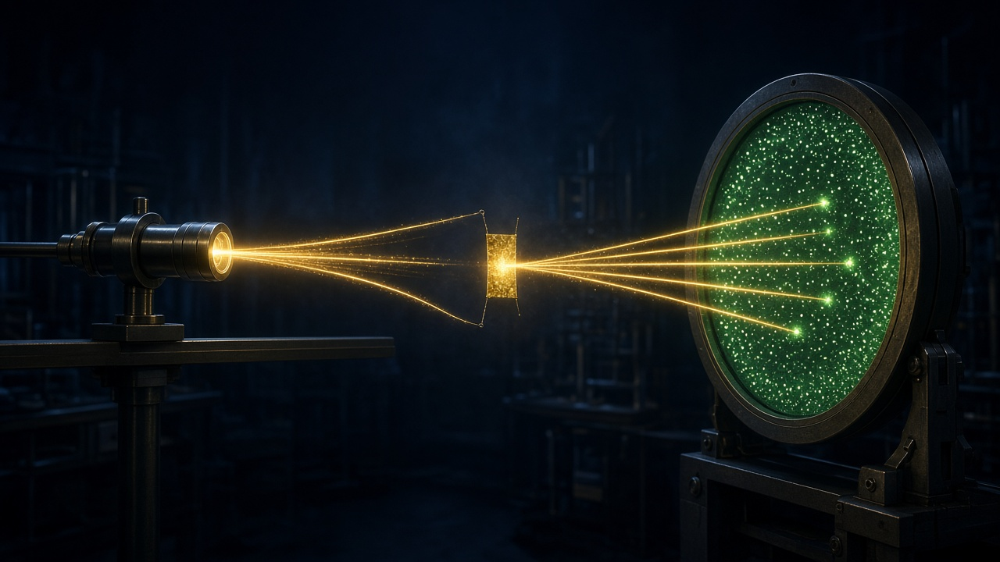
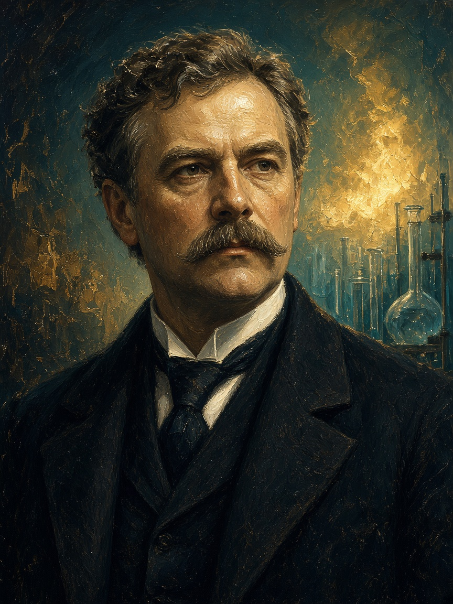

أدوات التجربة
- مصدر مشع يطلق جسيمات ألفا الموجبة He²⁺.
- رقاقة ذهب سمكها ذرات قليلة.
- شاشة كبريتيد الزنك تومض عند الاصطدام.

جسيمات ألفا الموجبة قُصفت على ذهب رقيق جداً. معظمها عبر، قليل انحرف، وأندرها ارتد. هذه الثلاثية هدمت حلوى تومسون وبنت النواة.

الخط الذهبي هو الرقاقة. معظم المسارات تعبر، بعضها ينحرف، والنادر الوردي يرتد. راقبي النسبة بعين الكيميائي لا بعين الصدفة.
الذرة في معظم حجمها فراغ. لو كانت كرة مصمتة موجبة كما قال تومسون، لتبعثرت الألفا كثيراً.
توجد شحنة موجبة قوية تؤثر على α الموجبة بالتنافر، لكنها صغيرة الحجم.
الكتلة الموجبة مركّزة وكثيفة جداً. رذرفورد شبّهها بطلقة ترتد عن نواة فولاذية لا عن كيس ريش.
لاحقاً اكتشف رذرفورد البروتون (1919). النيوترون جاء مع شادويك 1932.
النموذج لم يفسر لماذا لا تسقط الإلكترونات في النواة حسب الفيزياء الكلاسيكية. بور سيضيف المدارات المكمّاة، لكن للصف التاسع يكفي: رذرفورد اكتشف أين تقف الكتلة الموجبة.